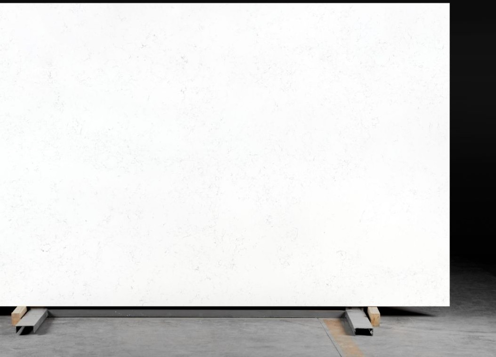

Quartz
Reliable visual consistency and easier maintenance direction for high-use projects and repeated spaces.

Asina Global
Cabinets / Countertops / Furniture
Category 02
Quartz, stone, and finish-forward surfaces for hospitality, TI, commercial, restaurant, and residential projects that need a cleaner specification conversation.

Material moodMaterial fit
The page should help builders and developers move from general material direction into project-specific finish and fabrication decisions.
Reliable visual consistency and easier maintenance direction for high-use projects and repeated spaces.
Natural variation and premium material character for projects that need stronger visual depth.
Category combinations for public-facing zones, back-of-house needs, and budget-balanced specification.
Balancing pattern, color movement, and surrounding materials without overcomplicating the selection.
Choosing the right edge profile and visual weight for the project style and use pattern.
Aligning fabrication requirements with drawings, installs, and mixed-category schedules.
Material, finish, and fabrication notes are easier to review when the page keeps the choice path structured and visual.
Applications
Use this page to build trust across guest-facing spaces and practical work surfaces.
Lobbies, vanities, bars, and support counters that need finish confidence and installation clarity.
Dining, service, and prep-related surfaces where durability and visual consistency both matter.
Kitchens, baths, and mixed-room upgrades that need material options without a fragmented buying process.
Quartz Guides
Use these if the team still needs help with care, slab direction, or how to evaluate the source side of the material.
A simple routine for care and long-term finish protection.
Kitchen moods mapped to actual GSV slabs.
A tighter sourcing checklist covering size, standards, and support.
Countertop-only or mixed-category projects can route through the same quote path.